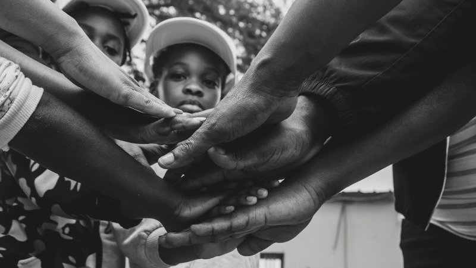

Weekly food parcel distribution

Pre-packed parcels of staples and seasonal produce, handed out every Tuesday and Thursday.
No one should go hungry in our neighbourhood.

GreenLeaf Community Food Bank collects, sorts, and distributes food donations to low-income families and individuals facing food insecurity in our local area. We run a weekly food parcel service, a weekend soup kitchen, and a donation drop-off and collection service for businesses and individuals.
Donate food or funds | Volunteer with us | Request a food parcel
Updated by volunteers every Monday, so a donation always lands where it's needed most.
| Item | Status |
|---|---|
| Cooking oil (2L) | Critical |
| Baby formula | Critical |
| Rice, 2kg bags | Low |
| Canned vegetables | Low |
| Pasta | Stocked |
Pre-packed parcels of staples and seasonal produce, handed out every Tuesday and Thursday.

A hot, sit-down meal open to anyone who needs one, every Saturday and Sunday.

Drop food off at the depot or a partner bin, or arrange a recurring pickup.